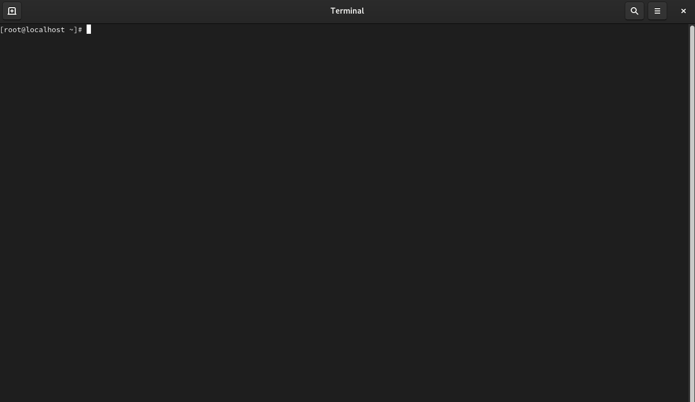

Terminal & Command Introduction
Why Use the Terminal?
Hollywood has made the terminal look like it's for elite blackhat hackers or just a display that looks like the Matrix.
However, the truth is the Linux terminal is a powerful interface that allows users to interact with the operating system at
a deep level. It provides a direct way to execute commands and manage files and directories without the need for a graphical
user interface. The command line is an expressive way to interact with your system, just like a conversation with a person.
Beyond simple directory lookups, processing configurations relies on file control commands. You will use the copy utility to
duplicate files, the move command to relocate or rename records, and the clear utility whenever you need to clean up an
overly crowded text window history layout.

Linux Basic Command Cheatsheet
To basically interact with the Linux terminal, you need to understand the primary commands used to navigate the system, manage
files, configure networking, and adjust permissions.
Basic Filesystem Commands
cat [filename] - Displays the raw contents of a file directly onto the screen.cd .. - Moves up exactly one directory level.cd / - Switches directly to the root directory.cd [directory] - Switches to a specified working directory.clear - Wipes all visible text history from the terminal screen interface.cp [filename] [new_name] - Duplicates a file and creates an exact copy.date - Displays the current system date and time.free -m - Displays the system's available and consumed memory usage in megabytes.head [filename] - Displays the first 10 lines of a specified file.history - Prints out a chronological list of previously executed commands.hostnamectl - Lists detailed system configuration information.ifconfig - Displays active network interface configuration details.kill [pid] - Terminates a specific active process using its unique Process ID.ls - Lists all files and directories in the current directory.ls -l - Lists all files with info like ownership, size, and modification date.man [command] - Pulls up the comprehensive manual and help information for a command.mkdir [directory] - Creates a brand new directory folder.mv [file] [new_path] - Moves a file to a new location.mv [old_name] [new_name] - Renames a file while keeping it in the same location.pwd - Prints the full absolute path of your current working directory.reboot - Restarts the operating system immediately.rm [filename] - Permanently deletes a file.rm -rf [directory] - Recursively removes a directory and all of its contents.shutdown -h now - Shuts down the computer system safely.sudo [command] - Runs commands with elevated root/administrator privileges.tail [filename] - Displays the last 10 lines of a specified file.top - Lists all running processes actively utilizing system resources.touch [filename] - Creates a brand new, empty file.vi [filename] - Opens a file for writing and editing inside the Vi text editor.
Networking Commands
dig -x [host] - Performs a reverse DNS lookup for an IP address.dig [domain] - Displays the detailed DNS records for a domain name.host [domain] - Displays the basic IP address of a target domain name.ping [ip] - Checks network connectivity to a specific IP address or host.ssh [user]@[host] - Securely logs into a remote system or server over the network.wget [file_url] - Downloads a file directly from the internet via a URL path.whois [domain] - Fetches comprehensive public registration information for a domain.
Permission Configuration Commands
chmod -R xxx [directory] - Recursively assigns file permissions to a folder and all its sub-folders.chmod [xxx] [filename] - Assigns read, write, and execute permissions to a file using absolute numeric codes.chown [user] [filename] - Changes the owner architecture of a file to a new user account.
Storage Related Commands
df -h - Lists storage capacity and free disk space information for all connected partitions.du -h /home/directory - Displays file directory size in a human-readable format.fdisk -l - Displays overall disk sizes along with distinct partition layout configurations.